The main impact of a 200 basis-point (2.00 percentage-point) rise in United States interest rates on Australia is a 0.03% drop in GDP by the 12th quarter — a minimal spillover. Australia ranks 24th of the countries in this run by the absolute size of its GDP response, placing it in the "minimal" band. The shock is a US monetary tightening, and Australia's own policy rate barely moves in response; the story here is a small, slow, and largely external drag rather than a domestic contraction. The GDP path opens almost at zero (−0.0007% in Q1), deepens gradually through the first year, and peaks at −0.0318% of GDP in Q12 before easing to −0.0095% by Q20. Nothing in the path changes sign, so the level of activity stays modestly below baseline throughout the horizon.
Demand and trade. Household consumption is the largest domestic component of the drag: it falls to −0.017% below baseline by Q12 and is still −0.0059% down at Q20, a slow erosion of spending rather than a sharp stop. Private investment is hit harder and earlier, peaking at −0.1083% below baseline in Q10, then recovering so strongly that it turns positive by Q19 (+0.0034%) and reaches +0.0104% by Q20 — the cost-of-capital shock fades faster than the income shock. Net exports, which this model reports as the trade balance rather than splitting imports from exports, actually improve: the trade balance rises to +0.035% above baseline by Q8 and remains +0.0092% above baseline at Q20, so trade is a partial offset to weaker domestic demand. Government spending edges up only marginally, peaking at +0.0032% in Q10 and fading to +0.0005% by Q20, consistent with a small automatic-stabiliser response rather than active stimulus. Government debt drifts down relative to baseline, reaching −0.0105% by Q18 and −0.0102% at Q20, a small improvement in the fiscal position as the primary balance holds up.
External / FX. The real exchange rate — currency strength — appreciates steadily, peaking at +0.4422% above baseline in Q10 and still +0.1581% stronger at Q20. A stronger real exchange rate normally works against net exports, yet here net exports improve at the same time. The reconciliation is that the trade balance gain is driven by weaker domestic absorption (fewer imports) rather than by export competitiveness, so the currency appreciation and the positive net-exports response are not in conflict — they reflect different sides of the same demand slowdown.
Labour. Employment falls to −0.0245% below baseline by Q14 and remains −0.0156% down at Q20, a persistent but small jobs shortfall. Unemployment rises in step, peaking at +0.0192 percentage points above baseline in Q15 and still +0.0138 points higher at Q20. Real wages, by contrast, rise: they peak at +0.034% above baseline in Q12 and are still +0.0017% higher at Q20. The combination of slightly higher unemployment and higher real wages is the signature of a disinflationary external shock that lifts real incomes even as nominal labour demand softens.
Prices. CPI inflation rises initially, peaking at +0.0146 percentage points above baseline in Q2, then falls through zero around Q10 and ends at −0.0043 points by Q20 — a brief imported-price bump followed by genuine disinflation. Domestic inflation follows the same arc, peaking at +0.0102 points in Q2 and turning negative by Q10, ending at −0.003 points at Q20. Firms' marginal cost falls steadily, peaking at −0.019% below baseline in Q11 and still −0.0056% down at Q20, which is the underlying source of the later disinflation.
Financial conditions. Australia's local policy rate rises only slightly, peaking at +0.0241 percentage points above baseline in Q6, then falls below baseline from Q13 onward and ends at −0.0225 points by Q20 — a small, temporary tightening followed by easing. Government bond yields move in a mixed pattern: the 2-year yield rises early (+0.0185 points in Q1), peaks at +0.0207 points in Q3, then turns negative from Q9 and ends at −0.017 points by Q20; the 5-year yield turns negative from Q3 and ends at −0.0095 points; the 10-year yield is negative throughout, ending at −0.0048 points. Bond prices fall as discount rates rise, peaking at −0.3048% below baseline in Q8, then recover so strongly that they turn positive from Q14 and end at +0.1404% above baseline by Q20. Equity prices fall to −0.289% below baseline in Q8 and remain −0.0319% down at Q20, having mostly faded by Q17. Tobin's Q, the value of installed capital, falls to −0.0758% below baseline in Q10, turns positive by Q19, and ends at +0.0073% at Q20. House prices decline slowly and persistently, peaking at −0.0267% below baseline in Q18 and still −0.0258% down at Q20. Bank credit contracts gradually, peaking at −0.0078% below baseline in Q17 and ending at −0.0074% at Q20. Lending spreads widen only trivially, peaking at +0.0001 percentage points in Q17 — effectively no meaningful credit-spread response.
Sectoral and capital. Manufacturing GDP is the hardest-hit sector, falling to −0.1323% below baseline in Q10 and still −0.0462% down at Q20, reflecting its greater sensitivity to the cost of capital and external demand. Services GDP falls much less, peaking at −0.0228% below baseline in Q12 and ending at −0.0068% at Q20. The capital stock declines very gradually, peaking at −0.0053% below baseline in Q18 and ending at −0.0052% at Q20, the slow accumulation of weaker investment.
Timing. The GDP hit is largest in Q12 at −0.0318% below baseline. It has not fully faded by Q20 — the level is still −0.0095% below baseline — but it has clearly passed its trough and is unwinding. The equity and bond-price responses peak earlier, around Q8, and the labour-market responses peak later, around Q14–Q15, so the financial shock front-runs the real-economy effects.
Close. These are model impulse responses relative to baseline, not forecasts. They describe how a 200 basis-point US rate rise propagates through Australia under the model's assumptions, and the headline message is that the spillover is small: a peak GDP loss of about 0.03% and a peak equity decline of about 0.29%, with the trade balance and real wages actually improving as the shock runs its course. Number check vs JSON: GDP peak -0.03%, CPI 3y +0.08pp, equity peak -0.29%.
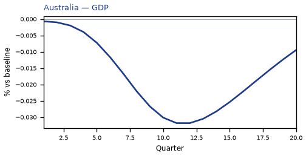
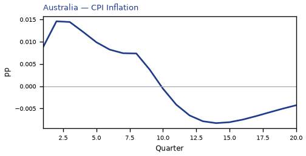
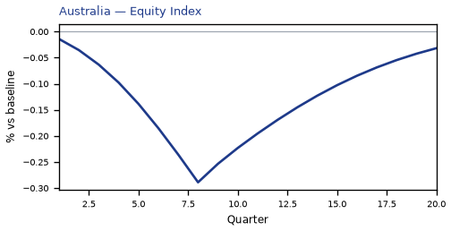
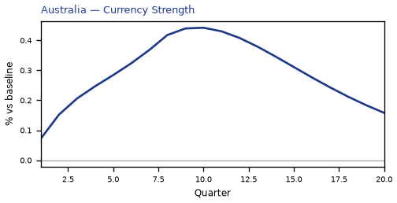
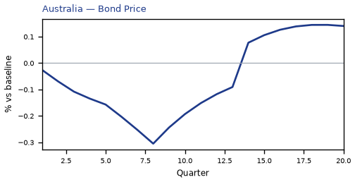
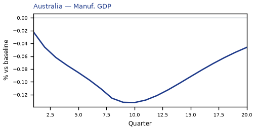
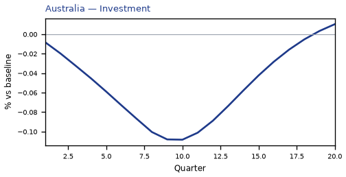
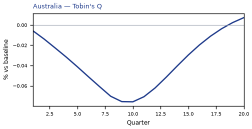
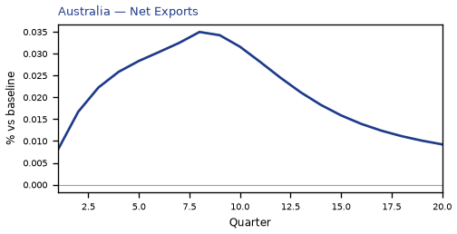
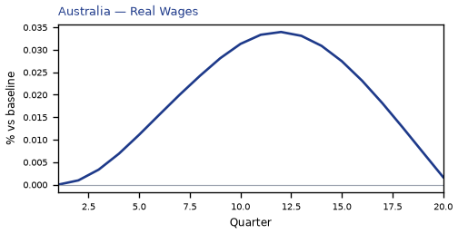
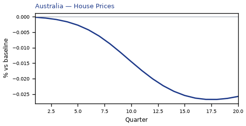
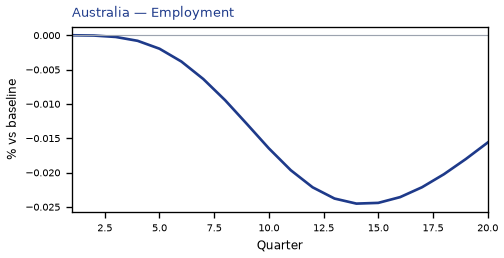
source=live · global_macro_v5 · contract v6 · Q1–Q20 JSON · not financial advice